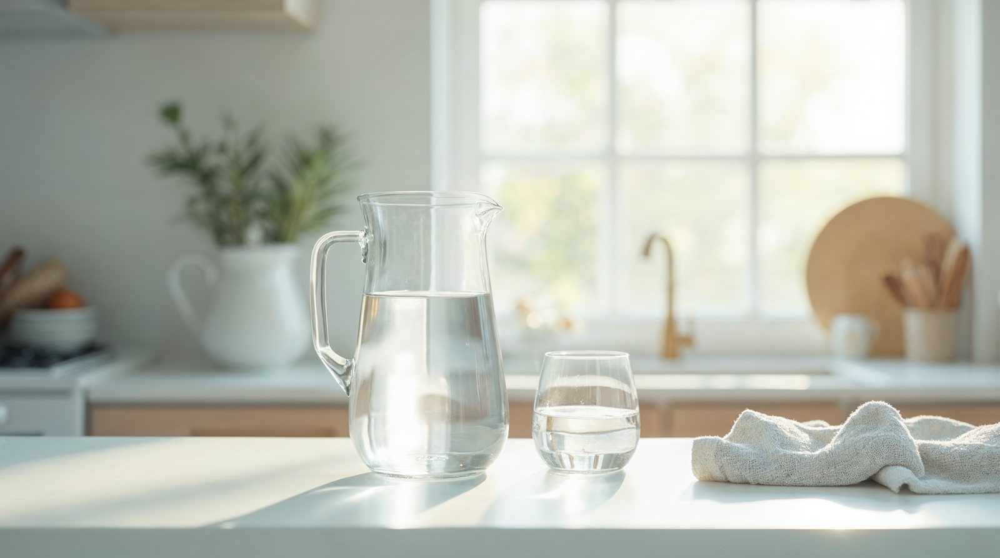
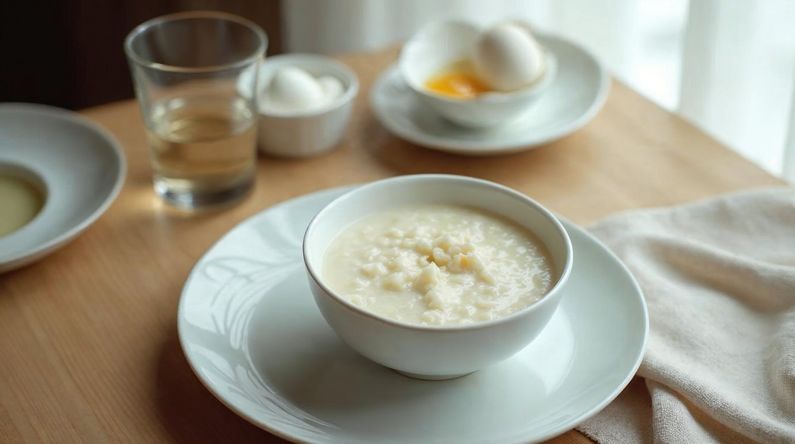
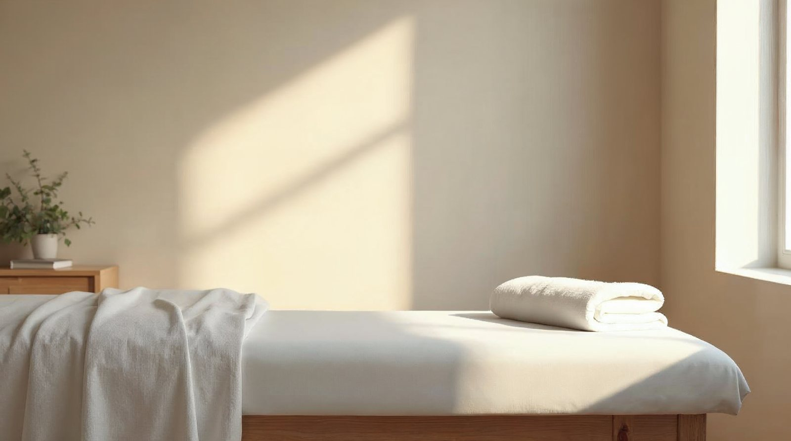
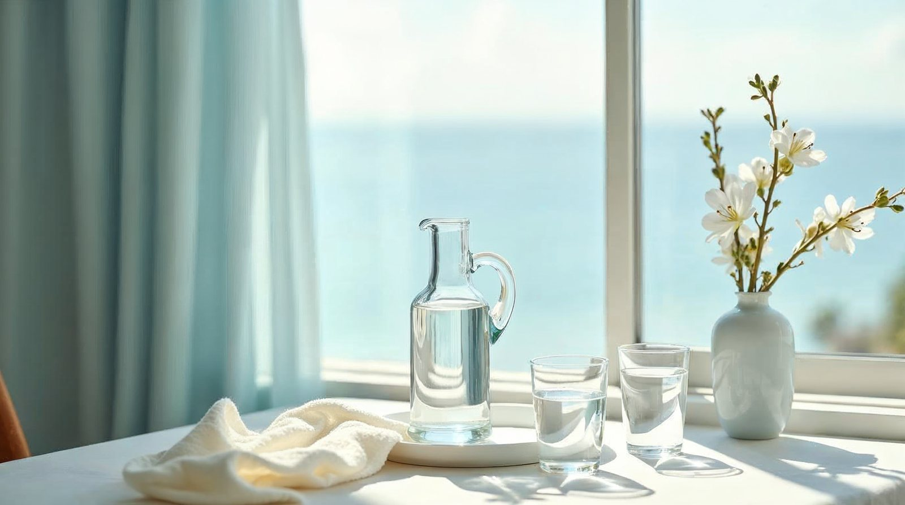
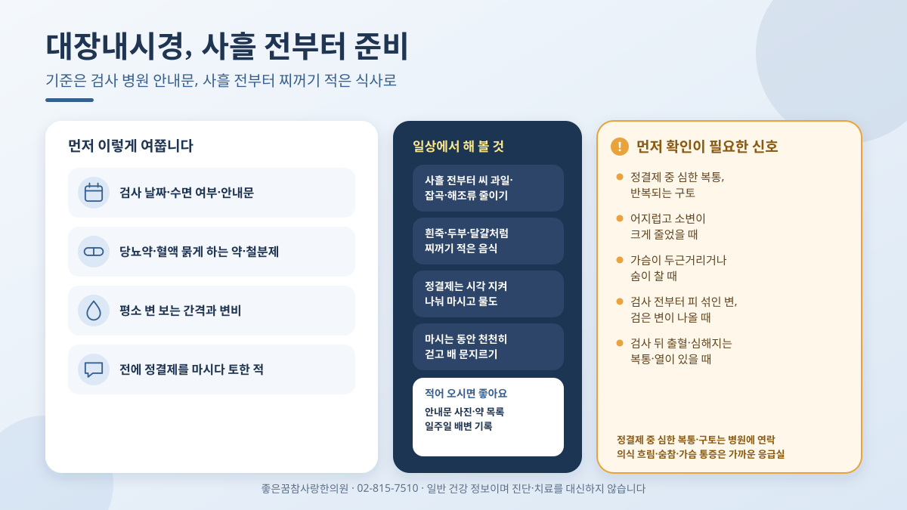

이종호 한의사 감수좋은꿈참사랑한의원 대표원장 (한의사 면허번호 19769)발행 2026-11-27 · 수정 2026-11-27
이 글의 차례
연말이 다가오면 미뤄 둔 건강검진을 서둘러 받으려는 분이 많아지고, 그 가운데 대장내시경을 처음 받거나 몇 년 만에 다시 받는 분도 적지 않습니다. 대장내시경은 장 안이 깨끗하게 비워져야 작은 용종까지 살펴볼 수 있어, 검사 며칠 전부터의 식사와 전날 장 정결제를 마시는 과정이 검사만큼 중요합니다.
준비의 기준은 검사 병원에서 받은 안내문이고, 병원마다 정결제 종류와 마시는 시각, 피해야 할 음식 목록이 조금씩 다릅니다. 흔히는 검사 사흘 전부터 씨가 있는 과일과 잡곡, 김이나 미역 같은 해조류, 나물과 김치처럼 질긴 채소, 견과류를 줄이고, 전날은 흰죽이나 흰밥처럼 찌꺼기가 적은 음식으로 가볍게 먹은 뒤 안내된 시각부터 금식합니다.
장 정결제는 정해진 시각에 나눠 마시고 사이사이 물을 마시며 천천히 걸으면 조금 덜 힘들게 넘길 수 있습니다. 당뇨약이나 혈액을 묽게 하는 약, 철분제, 한약을 드시고 있다면 언제 멈추고 언제 다시 먹을지 미리 검사 병원과 처방한 의사에게 확인해 두세요.
정결제를 마시는 동안 배가 심하게 아프거나 단단하게 부풀고, 토하는 일이 반복되거나 어지러워 쓰러질 것 같다면 참지 말고 검사 병원에 먼저 연락합니다.
왜 사흘 전부터 식사를 바꿔야 할까요
- 장 안에 찌꺼기가 남아 있으면 장 벽을 가려 작은 용종이나 염증을 놓칠 수 있고, 준비가 부족하면 검사를 다시 잡아야 하는 일도 생깁니다.
- 수박·참외·포도·키위·딸기처럼 씨가 있는 과일, 깨와 들깨, 잡곡의 껍질은 정결제로도 잘 씻겨 나가지 않고 남아 내시경의 흡입 구멍을 막기도 합니다.
- 김·미역·다시마 같은 해조류와 콩나물·고사리 같은 나물, 배추김치처럼 섬유질이 질긴 음식은 소화가 덜 된 채 장에 오래 머뭅니다.
- 평소 변비가 있어 사나흘에 한 번 변을 보는 분은 장 속에 오래 머문 변이 굳어 있어, 같은 정결제를 마셔도 장이 깨끗하게 비워지기 어렵습니다.
- 연말 회식이 검사 직전에 겹치면 기름진 음식과 술로 속이 불편해지고, 술은 몸의 물을 빼앗아 정결제를 마시는 날 어지럼과 탈수를 키울 수 있습니다.
- 철분제는 변을 검게 만들고 장 벽에 남기도 해, 병원에 따라 검사 며칠 전부터 멈추도록 안내하기도 합니다.
- 장 정결제는 장을 강하게 씻어 내는 약이라 몇 시간 동안 화장실을 자주 오가고, 그만큼 몸의 물과 기운이 빠져나갑니다. 전날 잠까지 설치면 검사 당일 더 지치기 쉽습니다.
- 한의학에서는 대장을 찌꺼기를 아래로 내려보내는 길(전도지관, 傳導之官)로 보고, 장의 흐름이 막히거나 늘어지면 배가 더부룩하고 변이 고르지 않다고 봅니다. 평소 이 흐름이 어떤지에 따라 준비가 수월한 분도, 유난히 힘든 분도 있습니다.
먼저 이렇게 여쭙니다
- 검사 날짜와 시각, 수면 내시경인지, 위내시경을 함께 받는지 여쭙니다.
- 검사 병원에서 받은 안내문이 있는지, 정결제를 언제 몇 번에 나눠 마시도록 안내받았는지 여쭙니다.
- 평소 변을 며칠에 한 번 보는지, 변이 단단한지 묽은지, 배에 가스가 자주 차는지 여쭙니다.
- 예전에 정결제를 마시다 토하거나 어지러웠던 적이 있는지 여쭙니다.
- 당뇨약, 혈압약, 혈액을 묽게 하는 약, 철분제, 변비약, 한약과 건강기능식품을 드시는지 여쭙니다.
- 콩팥이나 심장 질환, 장 수술을 받은 적이 있는지 여쭙니다.
- 검사 전 일주일 사이 회식이나 모임 일정이 있는지 여쭙니다.
- 검사를 앞두고 긴장으로 잠을 설치거나 속이 불편한지도 함께 여쭙니다.

일상에서 먼저 해 볼 수 있는 것
검사 일주일 전
- 안내문을 받은 날 바로 끝까지 읽고, 금식 시작 시각과 정결제 마시는 시각, 피할 음식, 약 복용 안내에 표시해 냉장고에 붙여 둡니다.
- 복용 중인 약 목록을 정리해 검사 병원에 미리 알리고, 혈액을 묽게 하는 약이나 당뇨약, 철분제처럼 미리 조절이 필요할 수 있는 약은 처방한 의사와 함께 확인합니다. 스스로 판단해 끊지 않습니다.
- 평소 변비가 있다면 이 시기부터 물을 조금씩 자주 마시고, 하루 20~30분 걷습니다. 변비가 심하다면 검사 병원에 미리 말해 추가 준비가 필요한지 묻습니다.
- 검사 사흘 전부터 회식이 잡혀 있다면 날짜를 바꾸거나, 메뉴와 술을 미리 조절할 방법을 정해 둡니다.
사흘 전부터 전날 아침까지
- 줄일 음식: 씨 있는 과일(수박, 참외, 포도, 키위, 딸기, 토마토 등), 현미·잡곡·콩·옥수수, 깨·들깨·견과류, 김·미역·다시마, 나물과 김치, 버섯, 질긴 고기와 기름진 튀김.
- 대개 괜찮은 음식: 흰밥이나 흰죽, 흰 식빵, 카스텔라, 두부, 달걀, 기름기 적은 흰살생선, 껍질 벗긴 감자, 맑은 국물. 병원마다 목록이 조금씩 다르니 안내문을 기준으로 합니다.
- 장보기를 미리 해 두면 먹을 것이 마땅치 않아 아무 음식이나 집는 일을 줄일 수 있습니다. 두부, 달걀, 흰죽 재료, 맑은 국물용 재료를 준비합니다.
- 반찬은 김치와 나물 대신 달걀찜, 두부조림, 감자조림처럼 부드러운 것으로 바꿉니다.
- 평소처럼 세 끼를 챙기되 양은 조금 줄이고, 천천히 꼭꼭 씹어 먹습니다.
전날
- 안내문에 따라 아침과 점심은 흰죽처럼 가볍게 먹고, 금식이 시작되는 시각 이후에는 안내된 맑은 음료만 마십니다. 빨간색이나 보라색 음료는 장 안에서 피처럼 보일 수 있어 피하라는 안내가 많습니다.
- 정결제는 안내문에 적힌 시각과 양을 지켜 나눠 마십니다. 시원하게 해 두거나 빨대로 마시면 맛이 덜 느껴진다는 분이 많고, 한 번에 들이켜기보다 정해진 간격으로 조금씩 마십니다.
- 마시는 사이사이 안내된 양의 물을 함께 마십니다. 물이 모자라면 어지럼과 두통이 생기기 쉽습니다.
- 정결제를 마시기 시작하면 한두 시간 안에 화장실 신호가 오는 경우가 많으니, 그 시간에는 외출 일정을 잡지 않고 집에 머뭅니다.
- 거실을 천천히 걷거나 배를 시계 방향으로 부드럽게 문지르면 장이 움직이는 데 도움이 되어 더부룩함이 덜하다는 분이 많습니다.
- 화장실을 자주 오가면 항문 주변이 쓰라리기 쉬워, 부드러운 화장지로 두드리듯 닦거나 물로 씻은 뒤 잘 말리고, 필요하면 보호 연고를 얇게 발라 둡니다.
- 잠옷은 입고 벗기 편한 것으로 입고, 화장실 가까운 방에서 잡니다. 새벽에 두 번째 정결제를 마셔야 한다면 알람을 맞추고 평소보다 일찍 잠자리에 듭니다.
검사 당일
- 마지막에 나오는 변이 건더기 없이 맑은 노란 물처럼 되었는지 확인합니다. 그렇지 않다면 검사 병원에 미리 알립니다.
- 혈압약처럼 아침에 먹던 약은 안내받은 대로 적은 양의 물과 함께 먹습니다.
- 수면 내시경이라면 당일 운전을 하지 않고, 보호자와 함께 가거나 대중교통을 이용합니다. 그날은 중요한 결정이나 계약처럼 판단이 필요한 일도 다음 날로 미룹니다.

상황별 예시
- 예를 들어 50대 직장인이 검사 사흘 전에 송년회가 잡혀 있는 경우, 날짜를 바꿀 수 없다면 고기구이 대신 두부나 흰살생선 위주로 먹고, 김치와 쌈 채소, 술은 피하며 1차에서 일어납니다. 다음 날부터는 흰죽과 두부, 달걀 위주로 가볍게 이어 갑니다.
- 예를 들어 평소 사나흘에 한 번 변을 보는 60대가 처음 대장내시경을 받는 경우, 일주일 전부터 물과 걷기를 늘리고, 검사 병원에 변비가 있다고 미리 알려 추가 준비가 필요한지 묻습니다.
- 예를 들어 예전에 정결제를 마시다 토해서 검사를 다시 잡았던 경우, 미리 검사 병원에 그 경험을 말해 정결제 종류나 마시는 방법을 상의하고, 마실 때는 시원하게 해서 빨대로 정해진 간격에 맞춰 조금씩 마셔 봅니다.
- 예를 들어 당뇨약을 드시는 어르신이 금식 시간이 길어지는 경우, 금식 중 혈당이 떨어질 수 있어 약을 어떻게 조절할지 처방한 의사와 검사 병원에 미리 확인하고, 식은땀이나 손 떨림이 있으면 안내받은 대로 대처합니다.
자주 하는 오해
- 전날 저녁만 굶으면 된다고 여기기 쉽지만, 사흘 전부터 먹은 씨와 섬유질이 장에 남아 검사를 방해할 수 있습니다.
- 물을 많이 마시면 정결제를 덜 마셔도 된다고 생각하는 분이 있습니다. 정결제는 안내받은 양과 시각을 지켜야 장이 고르게 비워집니다.
- 변이 맑아지기 시작했으니 남은 정결제는 안 마셔도 된다고 여기기 쉽지만, 장 안쪽까지 비워지려면 안내된 양을 마치는 것이 기본입니다.
- 검사 전날 술 한두 잔은 괜찮다고 생각하기 쉽지만, 술은 탈수를 키우고 정결제를 마시는 날 어지럼을 더할 수 있습니다.
- 김치는 매일 먹는 음식이라 괜찮다고 여기는 분이 많지만, 고춧가루와 배추의 섬유질이 장에 남기 쉬워 대개 검사 며칠 전부터 줄이도록 안내합니다.
스스로 점검해 보세요
- 검사 병원 안내문을 끝까지 읽고 금식 시각과 정결제 시각을 표시해 두었다.
- 복용 중인 약을 검사 병원에 알리고 조절 방법을 확인했다.
- 사흘 전부터 씨 있는 과일과 잡곡, 해조류, 김치를 줄였다.
- 검사 전 사흘 사이 회식이나 술자리 일정이 없다.
- 평소 변비가 있어 사나흘에 한 번 변을 본다.
- 예전에 정결제를 마시다 토하거나 어지러웠던 적이 있다.
- 검사 전날 화장실과 잠자리, 새벽 알람을 준비해 두었다.
다섯 번째와 여섯 번째 항목에 해당하면 검사 병원에 미리 말씀해 주세요.

한의원에서 함께 살필 수 있는 경우
- 평소 변비나 잔변감, 더부룩함이 있어 검사 준비가 걱정되는 경우
- 검사를 앞두고 긴장으로 잠을 설치거나 속이 불편한 경우
- 검사에서 특별한 이상이 없다고 들었는데도 배변 불편과 가스가 계속되는 경우
- 검사 준비로 지친 뒤 입맛과 기운이 돌아오지 않는 경우
좋은꿈참사랑한의원에서는 검사를 앞두고 오신 분께 먼저 검사 날짜와 받은 안내문, 복용 중인 약을 확인하고, 평소 배변 간격과 변의 모양, 가스와 더부룩함, 잠과 식사 시각을 차례로 여쭙니다. 그다음 맥부터 짚어 보고, 혀의 색과 설태, 배를 눌러 보며 아랫배가 찬지, 가스가 어디에 차 있는지, 장의 흐름이 늘어져 있는지 확인합니다.
그 결과에 따라 검사 일정에 무리가 없는 범위에서 침이나 뜸을 상의하고, 생활에서 배변 리듬을 정리하는 방법을 함께 정합니다. 한약을 드시고 있다면 검사 병원에 알리시도록 하고, 언제 멈췄다가 다시 드실지 검사 일정에 맞춰 안내해 드립니다.
검사와 결과 설명, 추적 검사 일정은 검사 병원의 몫이고, 한의원은 그 안내를 지키는 범위 안에서 몸과 식사 리듬을 함께 살핍니다. 검사 결과지를 가져오시면, 다시 오셨을 때 결과와 그사이 배변의 변화를 이어서 여쭙습니다.

얼마나 지켜보고 언제 상담할까요
- 정결제로 장을 비운 뒤 2~3일은 변이 적거나 모양이 달라지는 경우가 많고, 검사 중 넣은 공기로 하루 이틀 배가 부풀고 가스가 찰 수 있습니다.
- 검사 결과와 추적 검사 시기는 검사 병원의 설명을 따릅니다. 용종을 떼었다면 식사와 음주, 운동에 대한 별도 안내가 있을 수 있습니다.
- 검사 뒤 2~4주가 지나도 배변 리듬이 돌아오지 않거나, 이상이 없다는 설명을 들었는데도 더부룩함과 가스, 잔변감이 이어진다면 상담을 받아 보세요.
- 진료 시간은 평일 09:30~20:00(점심 13:00~14:00), 토·일·공휴일 09:30~15:00(점심시간 없음)입니다. 접수 마감 시각은 방문 전 전화로 확인해 주세요.
- 아래 신호가 있으면 지켜보지 말고 먼저 진료를 받습니다.
이렇게 기록해 오시면 상담이 쉬워집니다
- 검사 병원 안내문 사진과 검사 날짜
- 복용 중인 약과 한약, 건강기능식품 목록
- 검사 전 일주일 동안의 배변 기록(날짜, 횟수, 변의 모양)
- 사흘 전부터 먹은 음식과 회식 일정
- 정결제를 마시는 동안 있었던 불편(구토, 복통, 어지럼)과 잠든 시각
- 지난 검사 결과지와 용종을 뗀 적이 있는지
이런 증상은 먼저 확인이 필요합니다
- 정결제를 마시는 동안 배가 심하게 아프거나 단단하게 부풀고, 토하는 일이 반복되는 경우
- 어지러워 쓰러질 것 같거나, 소변이 크게 줄고 입이 바짝 마르는 경우
이런 신호가 있으면 한의원보다 가까운 병원이나 응급실을 먼저 찾으세요.
관련 글

여쭙는 것
- 검사 날짜와 시각, 수면 내시경인지, 위내시경을 함께 받는지 여쭙니다.
- 검사 병원에서 받은 안내문이 있는지, 정결제를 언제 몇 번에 나눠 마시도록 안내받았…
- 평소 변을 며칠에 한 번 보는지, 변이 단단한지 묽은지, 배에 가스가 자주 차는지…
생활에서 해 볼 것
- 안내문을 받은 날 바로 끝까지 읽고, 금식 시작 시각과 정결제 마시는 시각, 피할…
- 복용 중인 약 목록을 정리해 검사 병원에 미리 알리고, 혈액을 묽게 하는 약이나 당…
- 평소 변비가 있다면 이 시기부터 물을 조금씩 자주 마시고, 하루 20~30분 걷습니…
한의원에서 함께 살필 것
- 평소 변비나 잔변감, 더부룩함이 있어 검사 준비가 걱정되는 경우
- 검사를 앞두고 긴장으로 잠을 설치거나 속이 불편한 경우
- 검사에서 특별한 이상이 없다고 들었는데도 배변 불편과 가스가 계속되는 경우
먼저 확인이 필요한 신호
- 정결제를 마시는 동안 배가 심하게 아프거나 단단하게 부풀고, 토하는 일이 반복되는 경우
- 어지러워 쓰러질 것 같거나, 소변이 크게 줄고 입이 바짝 마르는 경우
한눈에 보는 표
| 구분 | 핵심 |
|---|---|
| 여쭙는 것 | 검사 날짜와 시각, 수면 내시경인지, 위내시경을 함께 받는지 여쭙니다. 검사 병원에서 받은 안내문이 있는지, 정결제를 언제 몇 번에 나눠 마시도록 안내받았는지 여쭙니다. |
| 생활에서 해 볼 것 | 안내문을 받은 날 바로 끝까지 읽고, 금식 시작 시각과 정결제 마시는 시각, 피할 음식, 약 복용 안내에 표시해 냉장고에 붙여 둡니다. 복용 중인 약 목록을 정리해 검사 병원에 미리 알리고, 혈액을 묽게 하는 약이나 당뇨약, 철분제처럼 미리 조절이 필요할 수 있는 약은 처방한 의사와 함께 확인합니다. 스스로 판단해 끊지 않습니다. |
| 한의원에서 함께 살필 것 | 평소 변비나 잔변감, 더부룩함이 있어 검사 준비가 걱정되는 경우 검사를 앞두고 긴장으로 잠을 설치거나 속이 불편한 경우 |
| 먼저 확인이 필요한 신호 | 정결제를 마시는 동안 배가 심하게 아프거나 단단하게 부풀고, 토하는 일이 반복되는 경우 어지러워 쓰러질 것 같거나, 소변이 크게 줄고 입이 바짝 마르는 경우 |
자주 묻는 질문
검사 며칠 전에 커피나 우유는 마셔도 되나요?
병원마다 안내가 조금씩 다릅니다. 검사 전날부터는 우유처럼 맑지 않은 음료를 피하라는 안내가 많고, 금식이 시작되면 안내된 맑은 음료만 마십니다. 정확한 기준은 받은 안내문을 따라 주세요.
정결제 맛이 너무 힘들어 다 못 마실 것 같아요.
시원하게 해 두고 빨대로 정해진 간격에 맞춰 조금씩 마시면 덜 힘들다는 분이 많습니다. 예전에 토했던 경험이 있다면 검사 병원에 미리 말해 정결제 종류나 마시는 방법을 상의해 보세요.
생리 기간과 검사 날이 겹치면 어떻게 하나요?
검사를 받을 수 있는 경우가 많지만 병원마다 다를 수 있어, 미리 검사 병원에 알리고 안내를 받으세요.
한약을 먹고 있는데 검사 전에 멈춰야 하나요?
검사 병원에 한약을 먹고 있다고 알리고 안내를 따르세요. 한의원에도 검사 날짜를 알려 주시면 언제 멈췄다가 다시 드실지 검사 일정에 맞춰 함께 정합니다.
검사가 끝나면 바로 평소처럼 먹어도 되나요?
검사 병원의 안내를 먼저 따르고, 대개 죽이나 부드러운 음식부터 양을 줄여 시작합니다. 용종을 떼었다면 식사와 술, 운동에 대한 별도 안내가 있을 수 있습니다.
좋은꿈참사랑한의원은 재진 때 지난번 이야기부터 이어서 여쭙니다. 진료시간과 예약은 오시는 길에서 확인하세요.
어디서 상담받을 수 있나요?
좋은꿈참사랑한의원은 서울 동작구 만양로2길 2 신성빌딩 3층·5층(서울 동작구 상도동, 7호선 상도역 3번 출구 근처)에 있습니다. 한의사 3명(이종호 대표원장, 조영기 수석진료원장, 정원영 진료원장)이 진료합니다. 진료시간은 평일 09:30~20:00(점심 13:00~14:00), 토·일·공휴일 09:30~15:00이며, 방문 전 전화로 확인을 권합니다. 예약은 네이버 예약, 카카오톡 상담, 전화 02-815-7510로 받습니다.
이 글은 일반적인 건강 정보이며 개인의 진단이나 치료를 대신하지 않습니다. 증상이 있거나 복용 중인 약이 있다면 진료를 통해 확인하세요. 치료 효과는 개인마다 다를 수 있습니다.
작성 기준: 일반적으로 알려져 있는 건강 정보를 참고해 정리했습니다(대표원장 감수). 증상 기록은 1~2주 동안 하루 1회, 비슷한 시간에 적어 오시면 지난 상태와 비교하기 쉽습니다.